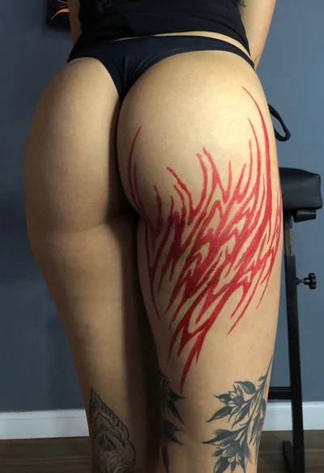
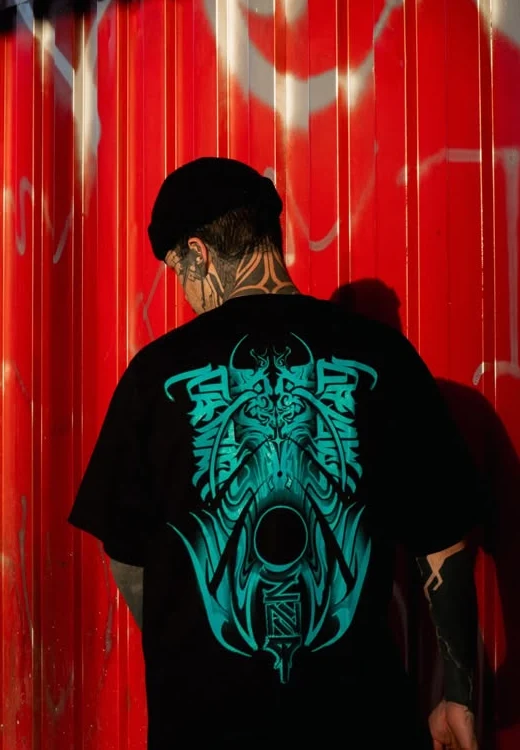
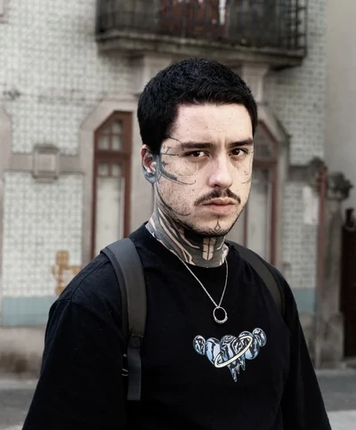

Tatuagem autoral · Brasília
A pele
é território.
Preto, gesto e espaço.
Uma linguagem feita para o corpo.
Atlas vivo do traço
O corpo
conduz.
Escolha uma região.
Descubra como o desenho ocupa a pele.
Ornamental · Freehand
Fluxo
contínuo.
As pontas percorrem o antebraço e seguem pelo dorso da mão. O espaço sem tinta também constrói o desenho.
- Região
- Braço e mão
- Observe
- O espaço entre as linhas
Leve as obras que você escolheu para a conversa com Pedro.
Ver minhas referências 0

Antes da tinta
O desenho
encontra o corpo.
O freehand começa com a anatomia diante dos olhos.
O traço encontra seu caminho diretamente na pele.

Gesto, composição, presença
Não existe
corpo igual.
Curvas, volumes e movimento participam do desenho. A marcação permite construir uma composição para aquela região, com espaço para ajustar o fluxo.
A anatomia orienta a composição. O espaço que fica sem tinta também precisa ser pensado.

O universo de Pedro Zenith
A linguagem
atravessa.
Da tatuagem ao vestuário.
A mesma pesquisa encontra outras superfícies.

Pedro Zenith
Traço próprio.
Pesquisa aberta.
Ornamento, caligrafia e massas de preto fazem parte de um universo que também aparece em roupas, pinturas e grafite.
Na pele, o freehand conecta essa pesquisa à anatomia. Fora dela, o desenho encontra outros formatos.
Acompanhar no Instagram
Workshop · Para tatuadores
Construa
seu próprio
traço.
Um encontro com o processo criativo de Pedro Zenith.
Composição ornamental, fluxo e desenvolvimento de uma linguagem própria. Uma aproximação com as decisões que vêm antes da tinta.
- Identidade e repertório
- Composição e encaixe anatômico
- Processo criativo e desenho
Preencha o formulário de interesse. As informações do encontro são compartilhadas pelo WhatsApp.

A próxima composição
Começa
em você.
Uma região, uma referência ou uma ideia ainda aberta. A conversa pode começar por aí.
Você pode começar sem referências.
Ou guardar uma obra que chamou sua atenção.